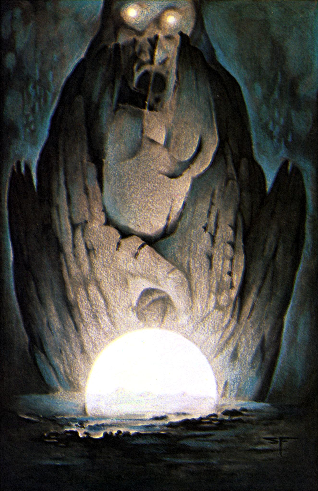
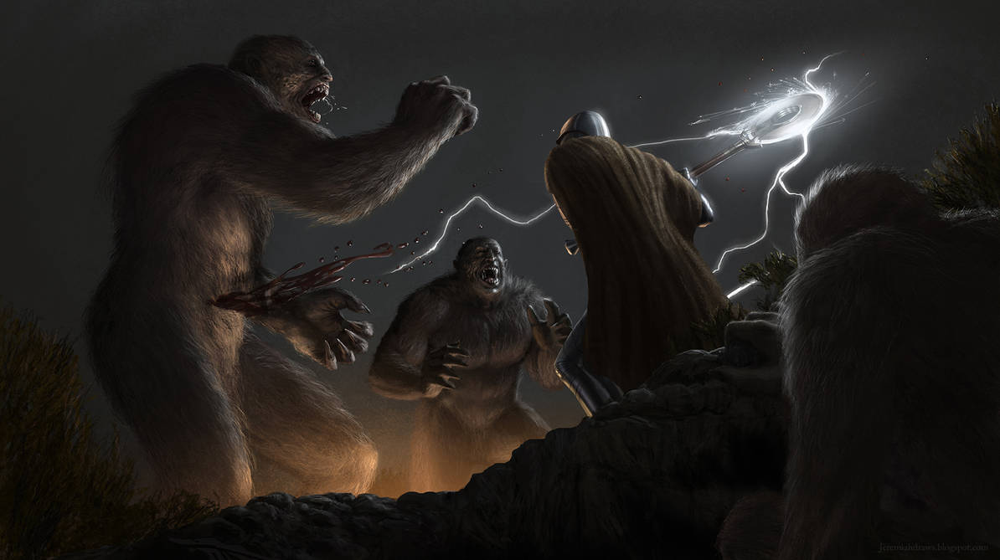

Of the Night Land ...
The Sun has died.
Not a planet, not a star, shines in the black heavens.
The Days of Light are less than a legend, their stories mouldered to dust amid the chaos of the ancient Libraries.
Yet, within their vast arcology, the last Millions of humanity live and thrive.
Outside, the huge entities of the Night Land watch — and wait.
The Last Redoubt has stood ten million years, and may stand ten million years more, but its final fall is inevitable.
The Land is as unknown as the depths of space. It holds life, some of it remotely akin to humanity. Fires burn and and shadows creep; cities and lights lie still; clothed and shrouded walkers glide forth.
Other Creatures, vaster than hills and slower and more ponderous than glaciers, wait eternally.
Forces stir in the darkness. Messages pass across the Land. From the tower above the Redoubt, the Monstruwacans keep record.
To this Land go the explorers of the Redoubt.
Rarely, rarely, they return.